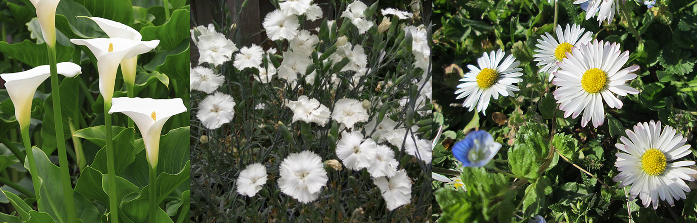
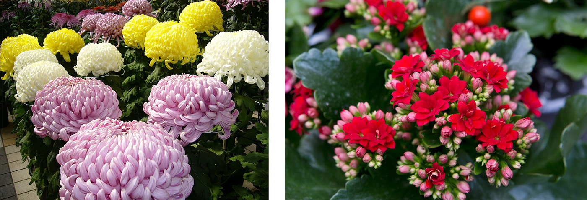
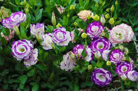
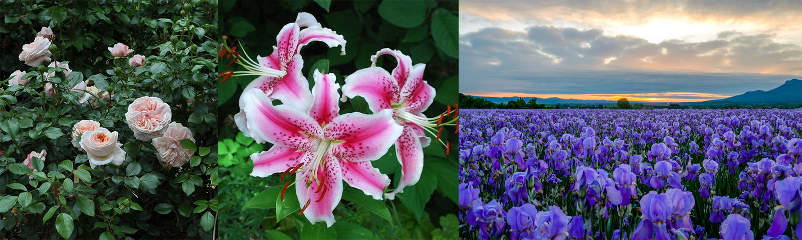
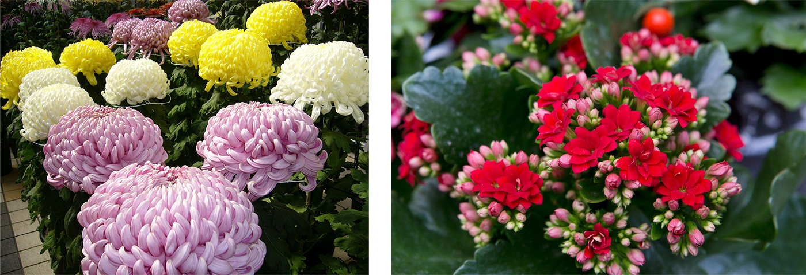
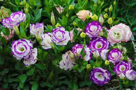
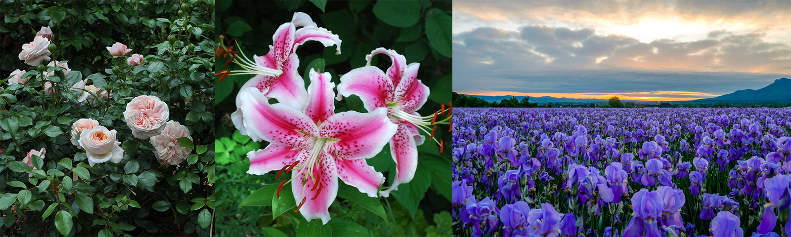

Silently chase away your worries
Please don't leave me behind, leave me behind
Aroma drags me out of where I was
Construct the map that helps me trace your steps
Take me to where our souls may live in peace
Please don't leave me behind, leave me behind
Aroma drags me out of where I was
Construct the map that helps me trace your steps
Take me to where our souls may live in peace